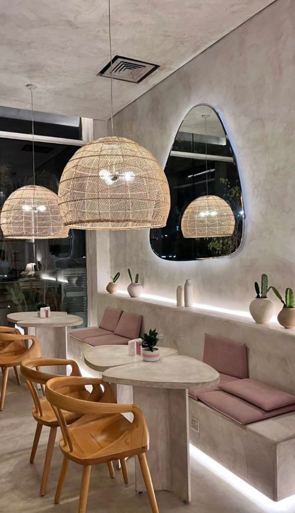

Your daily dose of happiness in a cup!
Welcome to Bloom & Bean! We serve freshly brewed coffee, delicious pastries, and a cozy atmosphere.Your home away from home.


The coffee shop, Bloom & Bean, was started in 2021 by Sandisile Dladla, a local entrepreneur who had a passion for coffee and to bring people together in harmony. Sandisile noticed that the community needed a comfortable place where people could make friends, study, relax, or have business meetings while enjoying good coffee. The idea of a coffee shop came from Sandisile’s love for coffee and desire to create a welcoming environment for the local community. After searching for ideas on how to create this vision, she decided to open a small but cozy coffee shop in her local community. Bloom & Bean began as a small shop serving tea, light snacks and freshly brewed coffee. Over time, the shop became popular among students, workers, and residents in the area because of its relaxing atmosphere and great service. Today coffee shop continues to serve the residents and more by providing a comfortable meeting place, quality coffee and supporting local suppliers.
: To serve passionately brewed coffee while creating a space where ideas, creativity and friends grow.
To become the community’s favorite coffee destination, known for serving great coffee and a welcoming aesthetic environment.
Email: bloom&bean.com
Phone: 011 345 6546
Operating Hours:8am -5pm(Monday- Saturday)
Location: 38 Avenue , 54 Midrand
© 2026 Bean Bliss Coffee Shop